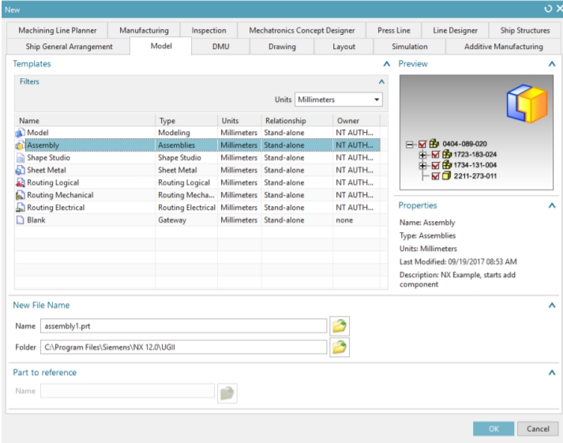
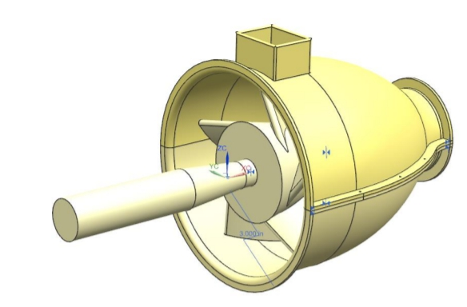

BOOK <<
Previous Next >> NX-12-for-Engineering-Design
Space Modeling with SolidWorks and NX
第6章-裝配建模
每天，我們都會看到許多將組件組裝成一個模型的示例，例如自行車，汽車和計算機。所有這些產品都是通過設計和製造單個零件，然後將它們裝配在一起而創建的。創建它們的設計師必須仔細計劃每個零件，以便它們都能完美地配合在一起以執行所需的功能。在本章中，您將學習在裝配體建模中使用的兩種方法。我們將以葉輪組件為例進行組件建模。該程序集的某些部分已經在較早的章節中進行了建模。 NX 12 Assembly是包含各個零件的零件文件。它們以這樣的方式添加到零件文件中，即零件實際上位於裝配體中並鏈接到原始零件。這樣就無需為計算機中的各個部件創建單獨的存儲空間。所有零件都是可選的，可在設計過程中用於信息和配合，以確保設計者想要的完美配合。下圖顯示瞭如何添加零部件以構成裝配體。
6.1術語裝配
裝配是指向零件和/或子裝配的指針的集合。裝配體是零件文件，其中包含零部件對象。零部件對象零部件對像是指向包含零部件幾何形狀的零件文件的非幾何指針。零部件對象存儲信息，例如圖層，顏色，參考集，零部件相對於文件系統中零部件的裝配體和路徑的位置數據。 NX 12用於工程設計123密蘇里科技大學零件零件是零件的一個零件文件，該零件在裝配體中指向。實際的幾何圖形存儲在零部件中，並且被引用，而不是由裝配體複製。零部件的出現零部件的出現是指向零部件文件中幾何圖形的指針。使用零部件實例來創建一個或多個零部件參考，而無需創建其他幾何體。參考集參考集是零部件或子裝配中的對象的命名集合，可用於簡化高層裝配中零部件的表示。
6.2組裝方法創建任何組裝模型的基本方法有兩種。
•自上而下的方法
•自下而上的方法
6.2.1自上而下的方法
在此方法中，首先創建裝配零件文件，然後在該文件中創建零部件。然後對各個零件進行建模。這種類型的建模在新設計中很有用。
6.2.2自下而上的方法
首先以傳統方式創建零部件，然後將其添加到裝配零件文件中。當零件文件已經存在於先前的設計中並且可以重複使用時，此技術特別有用。
6.2.3混合和匹配
可以在必要時將這兩種方法結合使用，以增加裝配設計需求的靈活性。 6.3裝配和約束導航器裝配導航器和約束導航器位於屏幕左側資源欄中零件導航器的頂部。這些導航器向您顯示構成裝配體的各種內容，包括零件層次結構，零件名稱，有關零件的信息，例如零件是否為只讀，對像數以及約束狀態。
6.4匹配約束
將零部件對象添加到裝配零件文件後，每個零部件對像都將與現有對象配對。通過在裝配的零部件上分配配合條件，可以在這些零部件之間建立位置關係或約束。這些關係稱為配合約束。配合條件由一個或多個配合約束組成。有不同的配合約束，如下所述：
觸摸/對齊：選擇進行對齊的平面對象將是共面的，但是平面的法線將指向相同的方向。圓柱對象的中心線將彼此對齊。
同心：約束兩個分量的圓形或橢圓形邊緣，以使中心重合，並且邊緣的平面共面。
距離：這將在兩個對象之間建立一個+/-距離（偏移）值。
平行：所選對象將彼此平行。
垂直：所選對象將彼此垂直。
鍵合：創建焊接並將零件焊接在一起以作為單個對象移動。
居中：對象將在其他對象之間居中，即沿槽定位圓柱並將圓柱在槽中居中。
角度：這將在要組裝的零部件上選擇的兩個對象實體之間固定一個恆定的角度
6.5示例
我們將組裝葉輪組件對象。您已經在前面的章節中對所有組件進行了建模。現在，我們必須將它們插入到組裝環境中，並應用約束以使它們相對於彼此定位。組裝完成後，我們可以創建分解圖並準備工程圖。在開始裝配建模之前，請在Hexabolt的葉輪下部殼體和葉輪上部殼體的每一側上分別製造三個通孔（每個殼體總共6個孔）。孔的直徑應為0.25，其位置應與下圖相似。確保下部和上部機殼在相同的位置上打孔，以便在組裝時匹配。
6.5.1開始裝配
➢創建新文件
➢在“模型”選項卡下選擇“裝配”
➢將單位設置為英寸
➢將其命名為Impeller_assembly.prt

或者，如果您在建模應用程序中並想開始組裝，則
➢在“應用程序”選項卡中打開“組裝”選項，然後會出現一個新的“組裝”選項卡
0
➢單擊文件→程序集，如下所示
0
在“組件”選項中，
•“添加”選項將添加其零件文件已創建的新組件對象。
•“新建”使您可以在使用自頂向下的裝配方法時在裝配文件中創建新的零部件幾何。裝配約束允許您創建裝配約束，而“移動零部件”則允許您將零部件重新放置在裝配中所需的位置。
0
6.5.2添加組件和約束
➢選擇添加將彈出右側所示的對話框。您可以從現有文件中選擇零件文件（應該已經在“已加載零件”選項卡中顯示），也可以使用對話框中的“打開文件”選項來加載零件文件。這會將選定的零件文件加載到“加載的零件”對話框中。
➢單擊“打開”圖標，然後選擇文件Impeller_upper-casing.prt。
➢在“零件名稱”對話框中單擊“確定”。然後，我們需要設置一個位置來放置第一個零部件的坐標系。在“位置”組框中，保留“裝配位置”的默認“捕捉”選項。
➢單擊選擇對象現在，您應該能夠以透明模式查看零件，如右側圖所示。
➢單擊“點對話框”圖標並創建[0，0，0]的坐標。
➢單擊“確定”退出“點對話框”。注意：可以隨意使用“循環方向”選項來設置不同的方向。
➢在“放置”組框中，我們可以定義該組件的放置位置和放置方式。在這種情況下，我們會將選項保留為默認值。
➢單擊“確定”退出“添加組件”對話框。然後，您將看到一個彈出對話框，如下圖所示。
0
➢單擊“是”為該零件創建一個“修復”約束。現在您所擁有的應該如下圖所示。
讓我們繼續添加第二個組件，即下部外殼。
0
➢單擊裝配部分中的添加➢從“零件”或“打開”中選擇文件Impeller_lower-casing.prt➢在“位置”組框中，將選項更改為“絕對–工件”以將新零件放置在當前工件的絕對原點處零件
➢在“放置”組框中，首先切換“移動”單選按鈕，然後將下殼體移離上殼體，以留出足夠的空間來選擇配合面。您將擁有的內容應該類似於下圖。
0
➢然後，切換約束單選按鈕。現在，讓我們配對上殼體和下殼體。您可以在“約束類型”框中的下拉菜單中訪問所有約束。在這裡，您可以看到不同的配合類型，這在上一節中已進行了說明。
➢確保在“類型”對話框中選擇了“觸摸對齊”圖標。
➢首先，選擇箭頭指向的面，如左圖所示。
➢如右圖所示，在屏幕上單擊上殼體的表面。
0
您可能必須調整視圖才能選擇面。選擇這兩個面後，將自動添加“觸摸對齊”約束。讓我們添加另一個“觸摸對齊”約束。
➢單擊上套管的法蘭➢單擊下套管的法蘭，您可能需要通過單擊“反”來反轉約束方向
0
下殼體相對於上殼體受到約束。現在讓我們添加葉輪。
➢選擇裝配體→零部件→添加以將零部件添加到當前裝配體中
➢打開文件Impeller_impeller.prt
➢在對話框中單擊確定➢選擇絕對–裝配體位置的工作零件
0
➢切換“約束”按鈕➢單擊“約束類型”框中的“距離”圖標➢選擇兩個面，首先在葉輪上，然後在殼體上，如下圖所示
0
➢在“放置”組的“距離”框中，輸入3的值。
➢按Enter預覽當前組件。預覽可能會顯示葉輪的方向與我們想要的方向相反。
0
➢要更改零件的方向或距離方向，請在“放置”窗口中，單擊“幾何要約束”框中的“循環最後約束”按鈕，如下所示
0
➢同樣，將六個墊圈和六個六角螺母分別向下移動至-30和-35。這是裝配體的分解圖。您可以旋轉並查看其外觀。
0
如果要返回原始未爆炸視圖，請單擊功能區中的爆炸視圖→從下拉菜單中選擇（不爆炸），如下所示
0
6.6.3千斤頂千斤
頂螺釘是一種通過轉動導螺桿來操作的千斤頂。在本練習中，將要求您建模，組裝和準備零件圖紙。所有尺寸均應以毫米為單位。為每個組件創建單獨的草稿。起草最終裝配並製作表格，列出各個零部件。大會草案應有分解圖。
0
第7章-自由曲面建模在本章中，您將學習如何在NX 12中創建自由曲面。至此，您已經學習了使用“表單特徵”或“草圖繪製”創建模型的不同方法。自由曲面建模涉及出於美學或功能目的，以曲面形式創建模型，例如車身和渦輪葉片。下面顯示了一些自由格式的功能。
0
要創建Freeform Feature，首先需要一組點，曲線，圖紙或實體的邊緣，圖紙或實體的面或其他對象。以下各節介紹了可用於使用自由格式功能創建模型的一些方法。 7.1概述在NX 12中，“自由格式功能”選項位於菜單→插入→曲面/網格曲面/掃掠/法蘭曲面和菜單→編輯→曲面的不同位置，以進行更高級的操作。您可以通過多種方式從現有特徵（如點，邊，曲線等）中創建自由形式特徵。以下部分討論了一些常用功能。 7.1.1從點創建自由形狀特徵如果要構造或預先存在的數據的幾何僅包括點，則可以嘗試使用以下三個選項之一從給定點構建曲面。
0
7.1.2通過截面字符串創建自由形式的特徵如果構造幾何包含連接對象（曲線和邊）的字符串，則可以使用以下兩個選項之一來創建自由形式的曲面。
➢從菜單中，單擊插入→網格表面直紋：如果您有兩個大致平行的字符串。通過曲線：如果三個或更多字符串大致平行。如果構造幾何圖形包含兩個或多個彼此大致平行的字符串（曲線，面，邊）以及一個或多個與第一組曲線（引導線）大致垂直的截面字符串，則可以嘗試使用其中一個以下這些選項可構建自由曲面。
7.2自由格式特徵建模讓我們來進行一些自由結構建模的練習，其中包括結構化點，點雲，曲線和麵。結構化點是一組點的已定義行和列。點雲具有形成雲的一組分散點。
7.2.1使用點建模➢打開文件freeform_thrupoints.prt➢右鍵單擊工具欄，確保選中了“曲面工具欄”。您將看到七行點
0
點的第一行將突出顯示。 ➢重複相同的步驟選擇前四行點。之後，將彈出一個窗口，詢問是否指定了所有點或是否要指定另一行。 ➢選擇“指定另一行，直到指定了所有行”。➢當指定了所有行後，選擇“指定所有點”➢單擊“通過點”窗口中的“取消”，您將看到如下所示的曲面。
0
7.2.2使用點雲建模➢打開名為freeform_cloud.prt的文件。點云如下所示。
0
➢選擇“插入”→“曲面”→“擬合曲面”，或者
➢單擊“曲面”工具欄上的此圖標，將出現以下對話框。
➢單擊點雲，選擇屏幕上的所有點。
➢在“適合方向”下拉菜單中，選擇“最適合”。這使點雲坐標係與原始系統匹配。
➢將U和V度的默認值更改為3
➢單擊“確定”。最終曲面將如下所示
0
7.2.3使用曲線建模➢打開名為freeform_thrucurves_parameter.prt的文件。曲線如下圖所示。
0
7.2.4使用曲線和麵建模➢打開名為freeform_thrucurves_faces.prt的文件。曲線和麵如右圖所示。 ➢選擇插入→網格表面→通過曲線➢選擇頂面的邊1➢選擇邊2並單擊MB2➢選擇邊3➢在對話框的對齊部分下，取消選中保留形狀複選框
0
7.3.3設計計算機鼠標對與以下所示類似的計算機鼠標進行建模（可以隨意搜索更多圖像作為參考），或者可以提出新的設計然後對其進行建模。提示一下，在不同的基準平面上創建一些邊界曲線，並使用它們創建自由曲面。
0
7.3.4設計運動水壺設計運動水壺，並使用NX（曲線和曲面）中的自由特徵對其建模。
0
BOOK <<
Previous Next >> NX-12-for-Engineering-Design